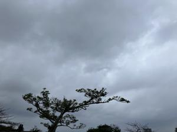
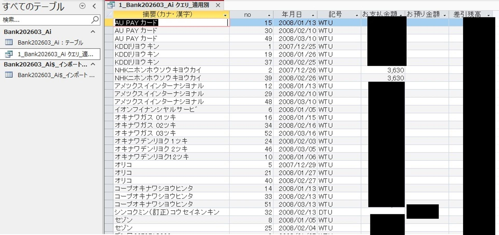
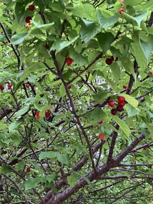

うるがいの話 ある日
最新: 通帳のＯＣＲ【うるがいの話 ある日】とは 一日だけのプログです
『うるがいの話』の最新一日だけのプログで、通信料が少なく経済的だ。カニの画像をクリックすると全ての日付が載る『うるがいの話』サイトを表示します
|
|
【うるがいの話】 うるがい(ｳﾙｶﾞｲ urugai)とは、『もずくがに』の名前でとても大きくなります。 |
|---|---|
|
|
【カミマヤーの話】 猫のことを方言でマヤーといいます。カミマヤー（kamimayaa）とは、神の猫のことです。 |
|
【たながぁの音楽】 たながぁ（ﾀﾅｶﾞｰ tanagaa）とは手長えびのことで、何種類かあり大きいのは車 エビぐらいになります。 |

|
【ぶながぁの話】 ぶながぁ(ﾌﾞﾅｶﾞｰ bunagaa)とは、赤い髪の毛、赤い身体、そして身長は１ｍ２０ｃｍ ぐらい、川の蟹を食べているの目撃された。場所は沖縄県国頭郡大宜味村のと ある村僕の隣近所に住んでいる爺さんから、聞いた話です。 |
|
|
【ギーマの話】 ギーマ(giima)とは、山原の里山に咲くスズランに似た、 花を付けます。実は食べられます、 気が付くと口の周りが紫になっています。 |
2026年03月22日 (日）通帳のＯＣＲ
15:57

なにかと出費が多い、果たして収支はどうなっているのだろう。
不安になってきた、ひと月分の出費はいかほどが、４年前の２０
２１年の１１月末に通帳をスマホでとり、グーグルでＯＣＲして
仮想マシンのＷｉｎｄｏｗｓＶｉｓｔａ環境下で、ＡＣＣＥＳＳ
２０００を利用して数日かけて作業をしました。
通帳の見開き３枚分をスマホで撮り、ＧｏｏｇｌｅでＯＣＲして
・・・・、文字の変換率が悪く作業に２時間ほどかかったところ
で、もしかしたら今どきはＡＩ？。ネットで、調べた、オオオ！
！！！！、『Ｇｏｏｇｌｅ ＡＩ Ｓｔｕｄｉｏで通帳のＯＣＲ
が完璧』。やりかけたデータはボツ、ＡＩのデータを使う。

ＡＣＣＥＳＳは、１９９９年のＡＣＣＥＳＳ２０００でなくオー
クションで安く手に入れたＡＣＣＥＳＳ２０２１でデータを展開
し、目的を果たす。ひと昔、役所からプリントされた紙から、源
泉徴収する職員の源泉徴収額を、複合機ゼロックスのＯＣＲでデ
ータ化を試みるも、まったく話にならなかった。凄い！と思う。

昨日ジョギングの途中、今年初めてサクランボを食べた。